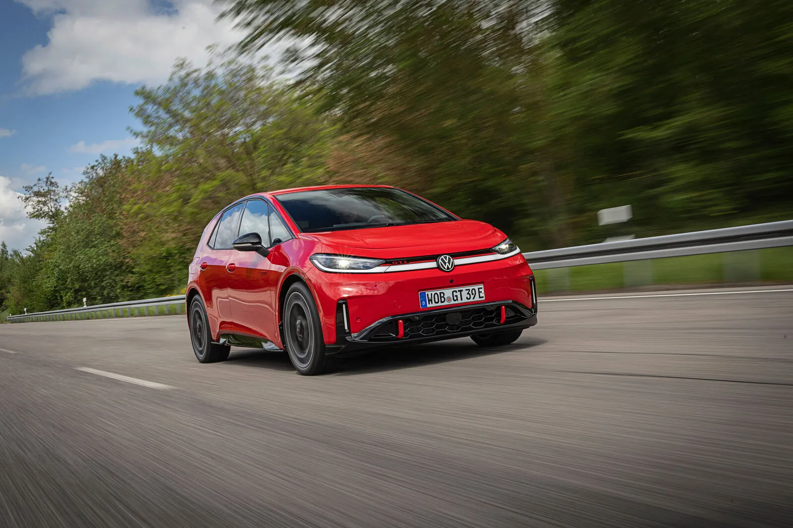
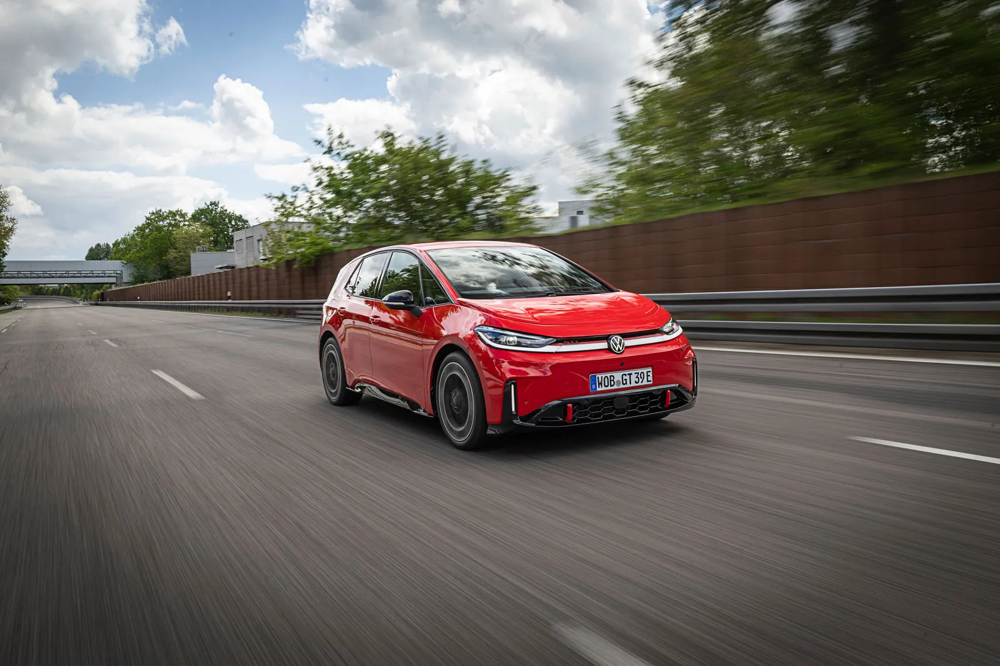
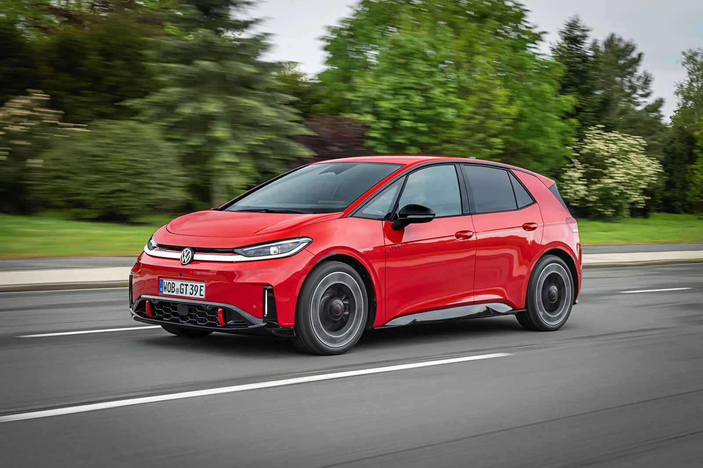
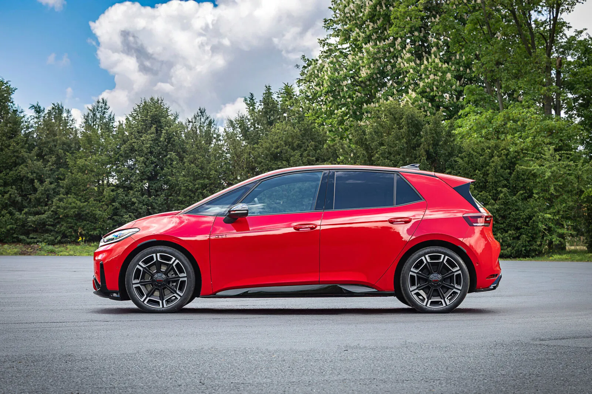

▲ 폭스바겐이 세계 최초로 공개한 순수전기 고성능 모델 ID.3 GTI. 240kW(326마력)로 역대 GTI 중 가장 강력하다 ⓒ Volkswagen
붉은 가로줄무늬, 타탄체크 시트, 그리고 GTI라는 세 글자. 1976년 골프 GTI가 만든 이 공식이 이번엔 전기 모터를 달고 나타났다.
폭스바겐이 순수전기 고성능 해치백 ID.3 GTI를 세계 최초로 공개했다. 폭스바겐그룹 공식 발표와 오토헤럴드 보도를 종합하면, 이 차는 단순히 'ID.3의 고성능 버전'을 넘어 50년 GTI 역사상 가장 강력한 모델이자 GTI 최초의 후륜구동 모델이라는 두 가지 타이틀을 동시에 거머쥐었다.
1. 무엇을, 어떻게 공개했나
ID.3 GTI는 2026년 9월 17일 세계 최초로 공개됐다. 폭스바겐은 공식 발표를 통해 이 모델을 "5개 GTI 세대를 통틀어 가장 강력한 모델"이라고 소개했다. 1976년 골프 GTI 이후 이어져 온 GTI 계보에서, 순수전기 모델이 최고 출력 타이틀을 차지한 것은 이번이 처음이다.
디자인은 GTI의 상징을 계승하면서도 전동화 시대에 맞게 다듬어졌다. 초대 골프 GTI에서 유래한 붉은 가로줄무늬가 전면 그릴 라인을 가로지르고, 20인치 "Wörthersee" 전용 합금휠과 타탄체크 패턴의 프리미엄 스포츠 시트가 적용됐다. 색상은 클래식 "Tornado Red"를 포함해 5가지가 마련됐다.

▲ 1976년 초대 골프 GTI에서 유래한 붉은 가로줄무늬가 전동화 시대의 ID.3 GTI에도 그대로 이어졌다 ⓒ Volkswagen
2. 역대 최강 출력, 그리고 GTI 최초의 후륜구동
ID.3 GTI의 심장은 'APP550'이라 불리는 전기 모터다. 이 모터는 240kW(326마력)의 출력과 545Nm의 최대토크를 낸다. 내연기관 시절 골프 GTI 최고 성능 버전들과 비교해도 압도적인 수치다.
더 눈에 띄는 대목은 구동 방식이다. ID.3 GTI는 이 강력한 힘을 오직 후륜에만 전달하는, GTI 역사상 최초의 후륜구동 모델이다. 폭스바겐 측은 이를 통해 "545Nm의 토크를 깔끔하게 노면에 전달"할 수 있다고 설명했으며, 기본 사양으로 런치 컨트롤(Launch Control)이 제공돼 최적의 출발 가속을 지원한다.
| 항목 | 제원 |
|---|---|
| 모터 | APP550 (후륜 단독 구동) |
| 최고출력 | 240kW (326PS) |
| 최대토크 | 545Nm |
| 0-100km/h | 5.6초 |
| 최고속도 | 200km/h (전자 제한) |
| 배터리 용량(순용량) | 79kWh 리튬이온 |
| 주행거리(WLTP 잠정) | 최대 601km |
| DC 급속충전 | 최대 183kW, 10→80% 약 29분 |
섀시 역시 고성능에 맞게 손질됐다. DCC 어댑티브 스포츠 서스펜션이 적용됐고, 배터리를 바닥에 낮게 배치한 구조 덕분에 무게중심이 낮아 상시적인 토크 전달과 맞물려 코너링 안정성을 높였다는 게 폭스바겐 측 설명이다.
3. 배터리·주행거리·충전 — 실사용 관점에서 본 숫자
고성능 모델이라고 해서 주행거리를 크게 희생하지는 않았다. 79kWh 순용량 리튬이온 배터리를 탑재해 WLTP 기준 잠정 최대 601km의 주행거리를 확보했다. 폭스바겐은 잠정 복합 전비를 14.5kWh/100km 수준으로 제시했다.
📍 충전은 얼마나 빠른가
DC 급속충전은 최대 183kW급을 지원하며, 10%에서 80%까지 약 29분이 소요된다는 것이 공식 수치다. 326마력급 고성능 모델임을 감안하면 실사용에서 크게 아쉽지 않은 충전 속도로 평가된다.

▲ 79kWh 배터리를 낮게 깔아 무게중심을 낮췄고, 이는 후륜구동 특유의 코너링 안정성으로 이어진다는 게 폭스바겐의 설명이다 ⓒ Volkswagen
4. GTI다움을 지킨 디자인·인테리어
전동화됐다고 해서 GTI 특유의 정체성이 사라진 것은 아니다. 실내에는 타탄체크 패턴의 프리미엄 스포츠 시트가 적용됐고, 붉은색 포인트가 곳곳에 배치돼 GTI 모델임을 한눈에 알아볼 수 있게 했다.
✅ ID.3 GTI의 상징적 디자인 요소
· 전면 그릴을 가로지르는 붉은 GTI 라인(1976년 골프 GTI 계승)
· 20인치 전용 "Wörthersee" 합금휠
· 타탄체크 패턴 프리미엄 스포츠 시트
· 클래식 컬러 "Tornado Red" 포함 5가지 외장 색상
5. 출시는 언제, 어떤 시장부터
공개는 세계 최초로 이뤄졌지만, 실제 인도까지는 시간이 더 필요하다. 폭스바겐은 2027년 초 독일 시장을 시작으로 사전 계약에 돌입할 예정이라고 밝혔다. 국내 출시 여부나 시기에 대해서는 아직 공식 언급이 없다.
폭스바겐 공식 발표 원문은 뉴스룸에서 확인할 수 있다. 폭스바겐 뉴스룸 바로가기

▲ 측면에서 본 ID.3 GTI. 지붕선을 따라 흐르는 루프라인과 리어 스포일러가 해치백 GTI 특유의 실루엣을 완성한다 ⓒ Volkswagen
6. 요약
폭스바겐이 순수전기 고성능 모델 ID.3 GTI를 세계 최초로 공개했다. 240kW(326마력), 545Nm 토크로 50년 GTI 역사상 최고 출력을 기록했으며, GTI 최초로 후륜구동을 채택했다.
0-100km/h 5.6초, 최대 601km 주행거리(WLTP 잠정), 183kW급 급속충전(10→80% 약 29분)이라는 수치가 공식 발표됐다. 붉은 GTI 라인, 타탄체크 시트 등 전통적 디자인 요소도 그대로 계승했다.
출시는 2027년 초 독일 시장 사전 계약을 시작으로 진행될 예정이며, 국내 출시 일정은 아직 공개되지 않았다.